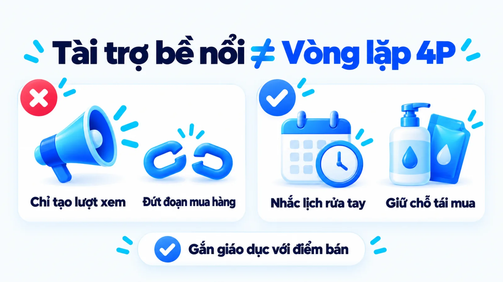
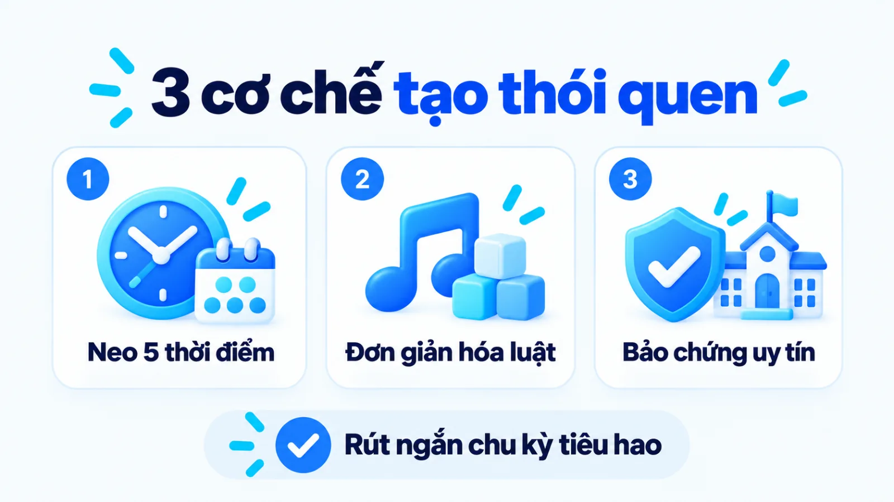
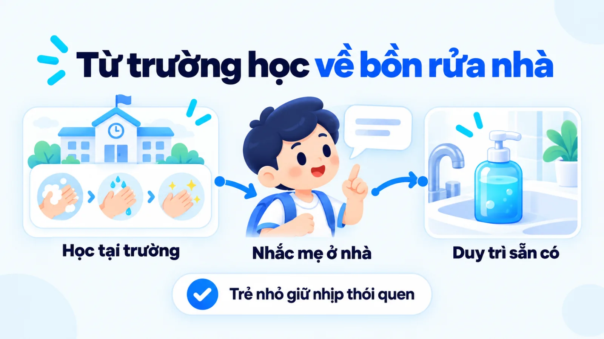
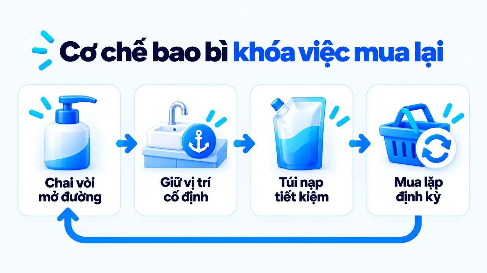
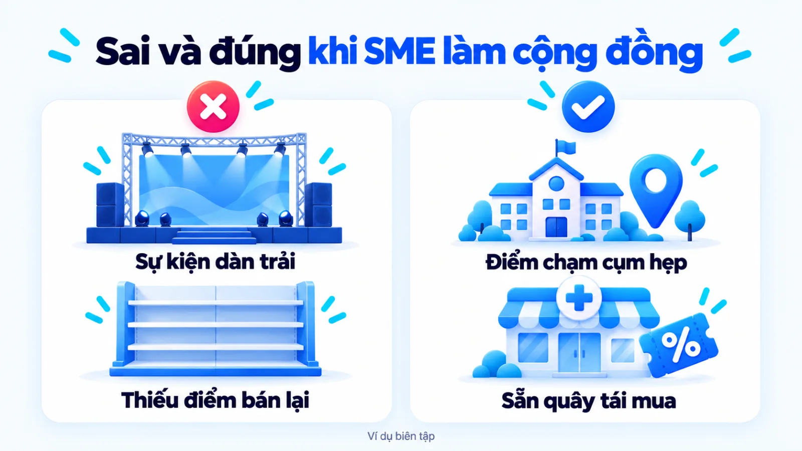
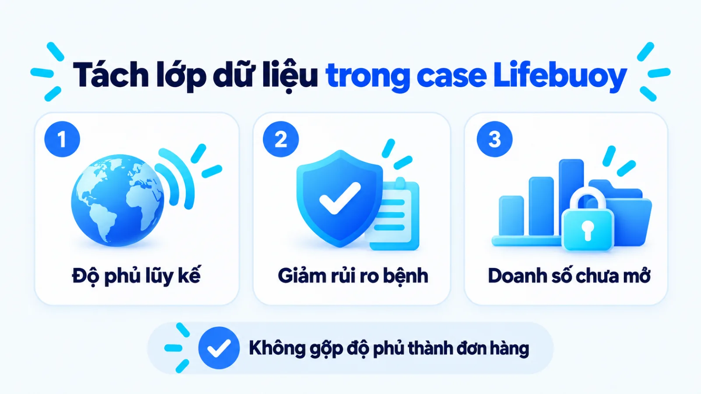
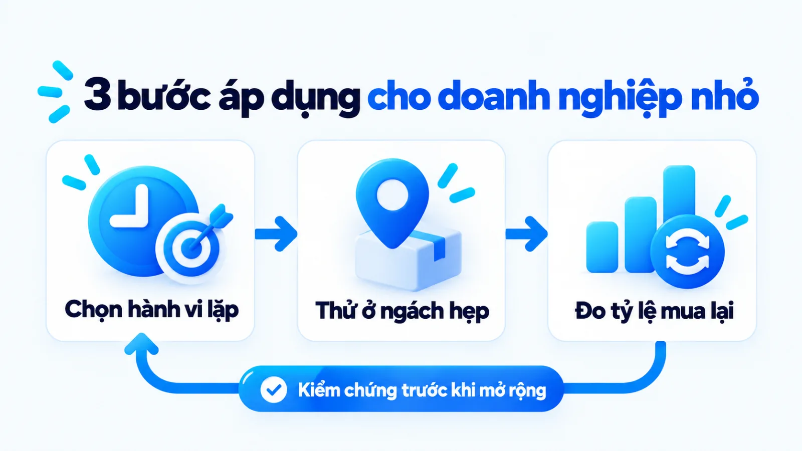

Chiến lược marketing của Lifebuoy và cơ chế 4P
Chiến lược marketing của Lifebuoy là mô hình chuyển hóa thông điệp y tế dự phòng thành thói quen mua lặp lại nhờ kết nối giáo dục vệ sinh cộng đồng với cấu trúc bao bì và điểm bán. Khi quan sát các chương trình rửa tay học đường hay truyền thông mùa dịch, góc nhìn bề nổi thường chỉ dừng ở độ phủ nhận diện hoặc thiện cảm xã hội. Nếu tách hoạt động cộng đồng khỏi cơ chế giữ chỗ tại bồn rửa bằng chai vòi nhấn và hạ chi phí tái mua bằng túi nạp lại, doanh nghiệp rất dễ tiêu tốn ngân sách tài trợ mà không tạo ra dòng tiền bền vững. Tôi là Lê Tuấn Việt, Marketing Leader tại TAKI Group. Trong bài viết này, tôi phân tích dữ kiện công khai về Lifebuoy, giải mã cơ chế phối hợp bốn trụ cột tiếp thị và xác định điều kiện áp dụng thực tế cho doanh nghiệp vừa và nhỏ.
- Đăng ngày
- Cập nhật

Tóm tắt nhanh
- Chiến lược marketing của Lifebuoy không dừng ở truyền thông trách nhiệm xã hội bề nổi mà gắn trực tiếp thông điệp phòng bệnh vào năm thời điểm sử dụng sản phẩm cố định mỗi ngày.
- Cấu trúc hai lớp bao bì gồm chai vòi nhấn giữ vị trí tại bồn rửa và túi nạp lại tiết kiệm giúp nhãn hàng hạ rào cản chi phí khi hộ gia đình mua bổ sung.
- Các chỉ số tiếp cận cộng đồng trên phạm vi toàn cầu cần được đọc tách bạch với tỷ lệ chuyển đổi thực tế và sức mạnh phân phối sẵn có của tập đoàn Unilever.
- Doanh nghiệp vừa và nhỏ chỉ nên thử nghiệm hoạt động giáo dục khách hàng tại điểm chạm hẹp sau khi đã chuẩn bị sẵn cơ chế giữ chân và kênh bán lại thuận tiện.
Mục lục bài viết8 phần
Chiến lược marketing của Lifebuoy là gì?
Chiến lược marketing của Lifebuoy là hệ thống quyết định chuyển hóa thông điệp y tế dự phòng thành thói quen tiêu dùng hàng ngày trong ngành FMCG (Fast-Moving Consumer Goods, ngành hàng tiêu dùng nhanh). Thay vì tách rời hoạt động cộng đồng khỏi bán hàng, nhãn hàng kết nối định vị bảo vệ sức khỏe với cấu trúc bao bì và độ phủ điểm bán để duy trì tần suất tái mua.
Hồ sơ dữ kiện công khai từ Unilever và cơ quan y tế
Dữ kiện nền tảng về lịch sử, quy mô tiếp cận và danh mục sản phẩm
Theo hồ sơ nhãn hàng công bố năm 2024 của Unilever Việt Nam, thương hiệu xà phòng khử trùng Lifebuoy ra đời năm 1894 với mục tiêu cải thiện điều kiện vệ sinh cho người dân và định vị tại Việt Nam là nhãn hàng bảo vệ sức khỏe gia đình. Trên phạm vi quốc tế, báo cáo tổng hợp năm 2024 của tập đoàn Unilever tự công bố các chương trình thay đổi hành vi rửa tay đã tiếp cận lũy kế hơn 1 tỷ người tính từ năm 2010.
- 1894
- Năm ra đời nhãn hiệu xà phòng khử trùng Lifebuoy theo công bố của Unilever Việt Nam năm 2024
- 1 tỷ
- Số người tiếp cận lũy kế toàn cầu từ năm 2010 qua chương trình hành vi do Unilever tự công bố năm 2024
- 15/10
- Mốc Ngày Thế giới rửa tay với xà phòng được Bộ Y tế và Lifebuoy phối hợp hưởng ứng theo bản tin năm 2020
Khi đặt cạnh các bài phân tích trong chuyên mục Dự án và bài học, trường hợp của Lifebuoy cho thấy sự khác biệt rõ rệt giữa việc tài trợ bề nổi để lấy hình ảnh báo chí với việc thiết kế một cơ chế tiêu dùng lặp lại. Thực tế, hoạt động cộng đồng chỉ tạo ra giá trị thương mại khi giải quyết trực tiếp rào cản tần suất sử dụng của ngành hàng.

Bối cảnh ngành sạch khuẩn và hệ tiêu chí cạnh tranh
Trong ngành hàng chăm sóc cá nhân gồm xà phòng tắm và nước rửa tay, các thương hiệu thường đứng trước hai hướng định khung tiêu chí lựa chọn cho người mua: cạnh tranh bằng thuộc tính cảm quan như hương nước hoa, dưỡng ẩm mềm da hoặc cạnh tranh bằng chức năng ngăn ngừa nguy cơ lây nhiễm mầm bệnh trong sinh hoạt gia đình.
Nếu đi theo trục mùi hương, sản phẩm rất dễ bị thay thế vì người mua có xu hướng thích đổi mùi mới sau khi dùng hết chai cũ. Ngược lại, khi Lifebuoy kéo người mua về hệ tiêu chí sạch khuẩn phòng bệnh, quyết định chọn nước rửa tay chuyển từ sở thích cá nhân thành trách nhiệm bảo vệ an toàn cho cả nhà, giúp duy trì quán tính giữ nguyên nhãn hiệu quen thuộc.
Phân khúc mục tiêu và định vị bảo vệ sức khỏe
Mô hình STP (Segmentation, Targeting, Positioning, tức phân khúc, chọn thị trường mục tiêu và định vị) của Lifebuoy tại Việt Nam xoay quanh đối tượng người mẹ và các hộ gia đình có con nhỏ ở cả khu vực thành thị lẫn nông thôn. Trong cấu trúc chi tiêu gia đình, người mẹ thường là người trực tiếp quyết định danh mục hàng tiêu dùng thiết yếu, đồng thời là người nhạy cảm nhất với các rủi ro dịch bệnh đường tiêu hóa hoặc hô hấp của trẻ nhỏ.
Hồ sơ giới thiệu nhãn hàng năm 2024 của Unilever Việt Nam nhấn mạnh mục tiêu mang lại điều kiện vệ sinh tốt hơn cho mọi người dân thông qua thói quen rửa tay bằng xà phòng. Định vị này giúp thương hiệu tránh được bẫy định giá xa xỉ để tập trung vào độ phủ đại chúng. Tuy nhiên, để lời hứa bảo vệ sức khỏe chuyển thành đơn hàng tại tiệm tạp hóa hay siêu thị, thương hiệu cần những cơ chế tác động trực tiếp vào hành vi sinh hoạt hàng ngày.
Ba cơ chế hành vi trong chiến dịch của Lifebuoy
Lifebuoy chuyển nhận thức phòng dịch thành nhu cầu tiêu thụ sản phẩm thực tế thông qua ba cơ chế hành vi vận hành nối tiếp nhau trong đời sống hộ gia đình. Ba cơ chế cốt lõi trong các chiến dịch của Lifebuoy gồm: neo sản phẩm vào các thời điểm rửa tay cố định trong ngày, chuyển hóa hướng dẫn y tế thành quy tắc trực quan cho trẻ nhỏ và phối hợp cùng trường học, cơ quan y tế để củng cố niềm tin.
- Neo vào thời điểm nguy cơ: Gắn hành động dùng xà phòng với các mốc sinh hoạt cố định như trước bữa ăn và sau khi đi vệ sinh để tăng tần suất tiêu hao tự nhiên.
- Đơn giản hóa quy tắc y tế: Chuyển kiến thức phòng bệnh khô khan thành bài hát, điệu nhảy và trò chơi bảng chữ cái để trẻ nhỏ dễ nhớ và tự giác thực hiện.
- Củng cố niềm tin qua trường học: Phối hợp cùng cơ quan y tế và hệ thống giáo dục để biến lời khuyên dùng sản phẩm thành chuẩn mực vệ sinh được xã hội công nhận.
Cơ chế 1: Gắn thời điểm rửa tay với điểm chạm bệnh
Về mặt dữ liệu dịch tễ học, tài liệu chuyên môn WASH (Water, Sanitation and Hygiene, tức nước sạch, vệ sinh môi trường và vệ sinh cá nhân) do UNICEF công bố năm 2023 trên mẫu tổng hợp nghiên cứu cộng đồng đa quốc gia chỉ ra rằng việc rửa tay bằng xà phòng và nước sạch có thể giúp giảm khoảng 30% tỷ lệ mắc các bệnh tiêu chảy. Cùng báo cáo năm 2023 này của UNICEF cũng ghi nhận thói quen rửa tay đúng thời điểm giúp giảm tới 20% nguy cơ nhiễm trùng đường hô hấp cấp tính ở trẻ nhỏ.
Dưới góc nhìn vận hành marketing, nếu người dân chỉ rửa tay bằng nước lã hoặc khi tay dính vết bẩn nhìn thấy được, tốc độ tiêu hao xà phòng sẽ rất chậm. Khi thông điệp truyền thông nhắc lại năm thời điểm cần rửa tay gồm trước khi ăn, sau khi đi vệ sinh và sau khi chơi ngoài trời, tốc độ sử dụng dung dịch tăng lên rõ rệt, trực tiếp rút ngắn chu kỳ quay lại điểm bán của người mua.

Cơ chế 2: Chuyển thông điệp y tế thành hành vi dễ nhớ
Kiến thức y khoa dự phòng thường chứa nhiều thuật ngữ chuyên môn khiến trẻ nhỏ khó tiếp thu và người lớn dễ quên ngay sau khi đọc tin tức. Theo thông tin chiến dịch toàn cầu công bố năm 2024 của Unilever, chương trình H for Handwashing được triển khai từ năm 2020 nhằm lồng ghép bài học rửa tay vào ngay bảng chữ cái cho học sinh mầm non và tiểu học. Tại Việt Nam, các chiến dịch truyền thông cũng thường xuyên sử dụng âm nhạc và vũ điệu minh họa các bước rửa tay để tiếp cận nhóm khán giả nhỏ tuổi.
Ví dụ biên tập, không phải kết quả khách hàng thật: trước giờ cơm tối, một bé mẫu giáo đứng ở bồn rửa vừa hát bài rửa tay học trên lớp vừa tìm chai nước rửa tay màu đỏ quen thuộc, khiến người mẹ tự nhủ sáng mai đi chợ phải mua ngay túi nạp lại. Tình huống giả định này cho thấy cách trẻ nhỏ trở thành người nhắc nhở mua hàng ngay trong gia đình khi thông điệp đủ dễ nhớ.
Cơ chế 3: Dùng điểm chạm học đường củng cố niềm tin
Một thông điệp cảnh báo vi khuẩn nếu chỉ phát ra từ quảng cáo của doanh nghiệp thương mại rất dễ gặp phải tâm lý hoài nghi của người tiêu dùng về việc hãng cố tình thổi phồng nỗi sợ để bán hàng. Theo bản tin năm 2020 trên Báo Điện tử Chính phủ, Bộ Y tế đã phối hợp cùng Unilever Việt Nam và nhãn hàng Lifebuoy tổ chức chuỗi hoạt động hưởng ứng Ngày Thế giới rửa tay với xà phòng 15/10 trên phạm vi toàn quốc nhằm phòng chống dịch bệnh truyền nhiễm hiệu quả và tiết kiệm.
Sự hiện diện của cơ quan quản lý y tế và nhà trường tại các điểm chạm cộng đồng giúp chuyển hóa lời mời gọi mua sắm thương mại thành hướng dẫn chăm sóc sức khỏe chính thống. Tuy vậy, cần đặt giới hạn rõ ngay tại đây: số liệu giảm 30% bệnh tiêu chảy và 20% nhiễm trùng hô hấp của UNICEF là hiệu quả y tế chung của hành vi rửa tay với bất kỳ loại xà phòng đạt chuẩn nào kèm nước sạch, không phải bằng chứng chứng minh sản phẩm của một hãng duy nhất có đặc tính y khoa độc quyền. Người phụ trách lập kế hoạch marketing cần phân biệt rõ lợi ích chung của toàn ngành hàng với lợi thế riêng của thương hiệu.

Phân tích 4P của Lifebuoy qua dòng nước rửa tay
Mô hình 4P của Lifebuoy (Product, Price, Place, Promotion, tức Sản phẩm, Giá, Phân phối và Xúc tiến) vận hành như một hệ thống khép kín nhằm chuyển hóa nhận thức cộng đồng thành đơn hàng lặp lại tại điểm bán. Bốn trụ cột trong mô hình 4P của Lifebuoy gồm: cấu trúc bao bì giữ chỗ và nạp lại, khung giá phân tầng theo dung tích, mạng lưới phân phối đa kênh và hoạt động truyền thông bám sát thời điểm bùng phát dịch bệnh.
Để thấy rõ cách các lựa chọn này hỗ trợ lẫn nhau và lý do doanh nghiệp nhỏ không thể sao chép nguyên bản, bảng dưới đây đối chiếu trực tiếp bốn trụ cột tiếp thị của Lifebuoy với rào cản thực thi của doanh nghiệp vừa và nhỏ.
| Trụ cột 4P | Lựa chọn chiến lược của Lifebuoy | Rào cản thực thi của doanh nghiệp nhỏ |
|---|---|---|
| Sản phẩm (Product) | Phát triển chai vòi nhấn giữ chỗ tại bồn rửa kèm túi nạp lại giúp giảm chi phí bao bì khi mua bổ sung. | Đầu tư nhiều khuôn bao bì cùng lúc làm tăng tồn kho trên từng mã hàng và đội chi phí gia công ban đầu. |
| Giá bán (Price) | Áp dụng mức giá thâm nhập dễ tiếp cận cho bánh xà phòng, túi nhỏ và bán gói dung tích lớn để khóa nhu cầu. | Thiếu lợi thế quy mô nên biên lợi nhuận gộp bị bào mòn nhanh nếu hạ giá trực diện để chạy đua thị phần. |
| Phân phối (Place) | Phủ sâu từ tiệm tạp hóa truyền thống, siêu thị đến gian hàng thương mại điện tử để khách mua được ngay. | Khó gánh chiết khấu kênh siêu thị và thiếu đội ngũ nhân viên thị trường chăm sóc hàng vạn tiệm tạp hóa. |
| Xúc tiến (Promotion) | Triển khai chương trình CSR (trách nhiệm xã hội) quy mô lớn vào dịp 15/10 và các đợt cao điểm dịch bệnh. | Ngân sách hạn hẹp không đủ sức duy trì chiến dịch giáo dục thị trường dài hạn trước khi thu hồi doanh thu. |
Lưu ý giới hạn khi đọc bảng: hiệu quả vận hành đồng bộ bốn trụ cột trên gắn liền với hạ tầng chuỗi cung ứng, năng lực đàm phán nhà bán lẻ và nguồn vốn dài hạn của tập đoàn đa quốc gia Unilever tại Việt Nam. Một thương hiệu độc lập mới gia nhập thị trường không có sẵn hệ thống xe tải phân phối chung cho nhiều ngành hàng sẽ chịu cấu trúc chi phí trên mỗi đơn vị sản phẩm hoàn toàn khác biệt.
Sản phẩm và bao bì túi nạp lại giải bài toán chi phí
Theo thông tin danh mục sản phẩm công bố năm 2024 trên trang chính thức của Lifebuoy Việt Nam, dòng nước rửa tay Lifebuoy Vitamin+ Bảo Vệ Vượt Trội 10 được cung cấp dưới cả quy cách chai vòi nhấn và dạng túi tiết kiệm (refill, tức túi nạp lại). Con số 10 trong tên sản phẩm là ký hiệu nhận diện dòng công thức của hãng, hoàn toàn không phải chỉ số phần trăm thị phần.
Sự kết hợp giữa chai nhựa cứng có vòi nhấn và túi nhựa mềm nạp lại giải quyết một bài toán hành vi rất thực tế tại hộ gia đình. Chai vòi nhấn đóng vai trò chiếm giữ không gian vật lý cố định trên thành bồn rửa tay. Khi dung dịch bên trong cạn dần, chiếc vỏ chai rỗng nằm ngay tầm mắt trở thành lời nhắc tự nhiên mỗi ngày; lúc này, quy cách túi nạp lại giúp người nội trợ mua bổ sung đúng nhãn hiệu cũ với mức chi phí tiết kiệm hơn thay vì chọn lại từ đầu giữa hàng chục nhãn hàng khác trên kệ.

Cấu trúc giá thâm nhập theo dung tích và gói mua kèm
Trong ngành hàng tiêu dùng nhanh thiết yếu, độ nhạy giá của người mua ở phân khúc đại chúng rất cao nếu họ phải chi trả liên tục hàng tháng. Thay vì áp một mức giá đồng nhất, cấu trúc giá của Lifebuoy được chia theo từng vai trò trong phễu tiêu dùng: các bánh xà phòng tắm hoặc túi nước rửa tay dung tích nhỏ đóng vai trò sản phẩm mở phễu với chi phí bỏ ra một lần thấp, giúp hộ gia đình ở nông thôn hay công nhân khu công nghiệp dễ dàng mua dùng thử.
Khi thói quen sử dụng đã ổn định, các quy cách túi nạp lại dung tích lớn hoặc gói nhiều túi trên sàn trực tuyến sẽ giúp giảm đơn giá tính trên mỗi mililít dung dịch. Cơ chế tách lớp bao bì này vận hành tương tự mô hình bán thân dao cạo râu kèm lưỡi dao thay thế: sản phẩm đầu tiên xác lập điểm neo tại bồn rửa, còn túi tiêu hao nạp lại mới là phần giữ chân khách hàng lâu dài mà không khóa chặt bằng rào cản kỹ thuật.
Độ phủ kênh tạp hóa truyền thống và thương mại điện tử
Một chiến dịch giáo dục cộng đồng dù tạo được ấn tượng mạnh đến đâu cũng sẽ rơi rụng ở bước chuyển đổi nếu người mua bước ra cửa hàng đầu ngõ mà không thấy sản phẩm. Lifebuoy duy trì sự hiện diện dày đặc tại kênh GT (General Trade, kênh phân phối truyền thống gồm chợ và tiệm tạp hóa) song song với kênh MT (Modern Trade, kênh bán lẻ hiện đại gồm siêu thị và cửa hàng tiện lợi). Khi chai nước rửa tay ở nhà vừa hết vào buổi chiều, người mua chỉ cần ghé tiệm tạp hóa cách nhà vài chục mét là có sẵn túi nạp lại để mua ngay.
Bên cạnh mạng lưới vật lý, khi triển khai chiến lược digital marketing kết hợp thương mại điện tử, vai trò của kênh trực tuyến được phân tách rõ ràng với tiệm tạp hóa. Vì nước rửa tay có trọng lượng nặng nhưng giá trị một túi đơn lẻ thấp, phí vận chuyển sẽ làm giảm sức hấp dẫn nếu bán lẻ từng món. Do đó, kênh sàn thương mại điện tử được ưu tiên cho các gói combo nhiều túi tiết kiệm, can dung tích lớn hoặc mua kèm sữa tắm cùng tập đoàn để tối ưu chi phí giao vận trên mỗi đơn hàng.
Truyền thông trách nhiệm xã hội gắn với thời điểm dịch
Trụ cột xúc tiến của Lifebuoy không rải ngân sách dàn trải đồng đều quanh năm mà tập trung dồn lực vào những thời điểm rủi ro dịch bệnh trong năm tăng cao. Các mốc thời gian trọng điểm bao gồm mùa tựu trường vào tháng 9, Ngày Thế giới rửa tay với xà phòng 15/10 theo ghi nhận của Báo Điện tử Chính phủ năm 2020, dịp Tết Nguyên đán và các đợt giao mùa dễ bùng phát bệnh tay chân miệng hoặc cúm hô hấp.
Ở góc độ phối hợp kênh truyền thông, nhãn hàng kết hợp quảng cáo đại chúng với nội dung hướng dẫn chăm sóc con cái trên các nền tảng số và hoạt động tương tác cộng đồng. Người làm nghề muốn hiểu sâu hơn cách phân bổ thông điệp trên mạng xã hội có thể tham khảo bài viết về social media marketing để thấy cách chuyển một chủ đề sức khỏe khô khan thành nội dung chia sẻ thực tế cho các gia đình.
Chiến lược marketing của nước rửa tay Lifebuoy
Điểm đặc thù trong chiến lược marketing của nước rửa tay Lifebuoy là biến các chương trình tài trợ vệ sinh học đường thành phễu dùng thử quy mô lớn, sau đó thu hoạch nhu cầu tái mua qua quy cách túi nạp lại tại điểm bán lẻ gần nhà. Sự tách biệt rõ giữa chỉ số độ phủ nhận biết truyền thông và tỷ lệ mua lặp lại thực tế là ranh giới quyết định hiệu quả thương mại của dòng sản phẩm này.
Tại sao nhiều doanh nghiệp nhỏ khi học theo mô hình marketing gắn với cộng đồng của các tập đoàn lớn lại thường rơi vào cảnh hết tiền trước khi thấy đơn hàng? Nguyên nhân nằm ở chỗ họ chỉ sao chép phần bề nổi là tổ chức sự kiện tặng quà hoặc làm video cảm động, nhưng lại bỏ quên toàn bộ phần hạ tầng chuyển đổi và giữ chân phía sau. Nếu người nhận mẫu thử dùng xong một lần rồi không biết mua tiếp ở đâu, chiến dịch đó chỉ là khoản chi từ thiện thuần túy chứ không phải đầu tư tiếp thị.
Ví dụ biên tập, không phải kết quả khách hàng thật
Đối chiếu hai cách triển khai chiến dịch cộng đồng của doanh nghiệp nước rửa tay quy mô nhỏ
Giả sử hai doanh nghiệp vừa và nhỏ cùng kinh doanh nước rửa tay thảo dược với ngân sách 150 triệu đồng trong một quý. Cách làm sai: Doanh nghiệp A dồn toàn bộ ngân sách tổ chức ngày hội tặng mẫu thử tại quảng trường tỉnh và đăng bài PR, nhưng quanh khu vực đó chưa có điểm bán lẻ và chỉ có bản chai vòi giá cao nên doanh số tháng sau đứng yên. Cách làm đúng: Doanh nghiệp B hợp tác với 10 trường mầm non tư thục tại quận đã có sẵn nhà thuốc lân cận bày hàng, tặng bình rửa tay tại lớp kèm cẩm nang cho phụ huynh có mã mua túi nạp lại tiết kiệm, nhờ đó đo được chính xác tỷ lệ hộ gia đình đặt mua lần hai.
- Điểm chạm
- Khoanh vùng cụm trường mầm non nơi đã có sẵn điểm bán hoặc luồng giao hàng thuận tiện
- Cơ chế giữ chân
- Dùng túi nạp lại kèm mã định danh theo trường để đo lường hành vi tái mua của phụ huynh
- Chỉ số kiểm soát
- Đo tỷ lệ khách hàng quay lại mua túi bổ sung sau 30 đến 45 ngày thay vì đếm lượt xem bài PR

Trong ví dụ biên tập này, sự khác biệt không nằm ở quy mô ngân sách hay lòng tốt của doanh nghiệp, mà nằm ở việc thiết kế đường dẫn từ lúc khách hàng dùng thử đến lúc họ mua bổ sung lần thứ hai. Tôi ưu tiên kiểm tra cơ chế tái mua và độ sẵn có của hàng hóa tại điểm chạm trước khi duyệt bất kỳ ngân sách tài trợ cộng đồng nào, vì độ phủ truyền thông không tự chuyển thành dòng tiền nếu đứt gãy ở khâu mua lại. Có độ phủ chưa chắc có đơn hàng.
Đối chiếu bằng chứng công khai và giới hạn dữ liệu
Các hồ sơ công khai từ Unilever, Bộ Y tế và UNICEF xác nhận quy mô hợp tác cộng đồng cùng cơ sở khoa học của thói quen rửa tay, nhưng chưa chứng minh được tỷ suất hoàn vốn trực tiếp của từng chiến dịch hay thị phần riêng lẻ của dòng nước rửa tay. Việc tách bạch dữ kiện đã xác minh với phần diễn giải cơ chế giúp người làm marketing tránh ngộ nhận tương quan truyền thông là nhân quả doanh thu.
Để người đọc có cái nhìn khách quan trước các con số thường được trích dẫn lại trên mạng, bảng dưới đây đối chiếu ba lớp thông tin: dữ kiện nguồn xác nhận, diễn giải cơ chế trong bài và giới hạn cùng các khả năng giải thích khác.
| Dữ kiện nguồn xác nhận | Diễn giải cơ chế trong bài | Giới hạn và khả năng khác |
|---|---|---|
| Tiếp cận 1 tỷ người (2024) | Unilever công bố tiếp cận 1 tỷ người từ 2010 qua giáo dục vệ sinh giúp mở rộng nhận biết và tạo thói quen. | Số lũy kế toàn cầu do hãng tự công bố, không phản ánh số khách mua lặp lại tại thị trường Việt Nam. |
| Giảm bệnh tật (UNICEF 2023) | Rửa tay giúp giảm 30% tiêu chảy và 20% nhiễm trùng hô hấp, củng cố lý do dùng sản phẩm ở năm mốc rửa tay. | Đây là hiệu quả chung của xà phòng bất kỳ và nước sạch, không phải công dụng độc quyền của riêng hãng. |
| Hợp tác Bộ Y tế dịp 15/10 | Báo Chính phủ 2020 ghi nhận hợp tác công tư giúp chuyển thông điệp thương mại thành khuyến nghị sức khỏe. | Chưa có dữ liệu độc lập tách riêng tỷ lệ chuyển đổi từ sự kiện mít tinh sang doanh số bán lẻ tại quầy. |
| Chai vòi và túi nạp (2024) | Lifebuoy Việt Nam cung cấp cấu trúc bao bì hai lớp giúp giữ vị trí tại bồn rửa và hạ chi phí mua bổ sung. | Sức mua lặp lại còn phụ thuộc mạnh vào chiết khấu thương mại và độ phủ sẵn có của mạng lưới Unilever. |
Cần lưu ý thêm một biến nhiễu lịch sử rất lớn khi đọc các phân tích về ngành hàng sạch khuẩn: trong giai đoạn dịch COVID-19 bùng phát từ năm 2020 đến năm 2021, nhu cầu tiêu thụ nước rửa tay và gel sát khuẩn tăng vọt trên toàn thị trường do quy định phòng dịch bắt buộc và tâm lý lo ngại chung của xã hội. Do đó, không thể lấy mức tăng trưởng đột biến trong giai đoạn đặc thù đó để quy kết hoàn toàn cho hiệu quả sáng tạo của một chiến dịch quảng cáo đơn lẻ. Ngoài ra, hiện chưa có số liệu kiểm toán công khai tách riêng tỷ lệ phần trăm thị phần doanh thu của riêng dòng nước rửa tay Lifebuoy tại Việt Nam theo từng năm.

Lưu ý về truyền miệng gia đình và dữ liệu khó đo nguồn
Trong ngành hàng chăm sóc gia đình, một phần lớn quyết định mua đến từ việc người mẹ thấy sản phẩm tại nhà người thân, nghe giáo viên nhắc trong nhóm nhắn tin phụ huynh hoặc được chủ tiệm tạp hóa quen giới thiệu. Những điểm chạm truyền miệng riêng tư này không để lại dấu vết nhấp chuột trực tiếp trên hệ thống đo lường số, tương tự cơ chế được phân tích trong bài dark social trên website.
Bài học có điều kiện cho doanh nghiệp vừa và nhỏ
Doanh nghiệp vừa và nhỏ không nên sao chép quy mô tài trợ đại chúng của Lifebuoy, mà cần trích xuất nguyên lý gắn sản phẩm với hành vi lặp lại, thử nghiệm ở điểm chạm hẹp và đo tỷ lệ tái mua trước khi mở rộng kênh. Quy trình chuyển giao bài học vào thực tế vận hành gồm ba bước thực hiện tuần tự kèm bảng điều kiện áp dụng dưới đây.
Trước khi đi vào từng bước thao tác, bảng chuyển giao sau đây tóm tắt ba bài học cơ chế, điều kiện ngành hàng phù hợp cùng ngoại lệ đảo chiều và việc thử nhỏ để người phụ trách marketing tự đối chiếu với nguồn lực hiện tại.
| Bài học cơ chế | Điều kiện phù hợp và ngoại lệ | Việc thử nhỏ và tín hiệu đo |
|---|---|---|
| Neo vào mốc sinh hoạt ngày | Gắn sản phẩm vào mốc cố định hợp với hàng tiêu hao nhanh; đảo chiều với hàng mua một lần dùng nhiều năm. | Chọn một tình huống sử dụng cụ thể làm nội dung hướng dẫn, đo tỷ lệ khách quay lại mua trong 45 ngày. |
| Tách vỏ giữ chỗ và túi nạp | Tách bao bì giữ chỗ và gói nạp lại hợp khi chu kỳ mua 4 đến 6 tuần; đảo chiều với hàng quà tặng sang trọng. | Thử bán gói combo gồm 1 chai vòi kèm 2 túi nạp lại cho tệp khách cũ, đo tỷ lệ chọn gói tiết kiệm. |
| Mượn điểm chạm chuyên môn | Dùng điểm chạm chuyên môn tạo uy tín hợp với ngành sức khỏe, mẹ bé; đảo chiều khi chưa có hồ sơ kiểm định. | Hợp tác thử với 3 đến 5 điểm chạm ngách như phòng khám hoặc trường tư, đo chi phí trên mỗi đơn tái mua. |
Giới hạn áp dụng của bảng: các bước thử nghiệm chỉ phản ánh đúng sức hút tự nhiên của sản phẩm khi doanh nghiệp tách riêng được nhóm khách mua do khuyến mãi giảm giá sâu với nhóm khách quay lại mua vì nhu cầu sử dụng thực tế trong kỳ theo dõi.
Bước 1: Xác định hành vi lặp lại gắn với sản phẩm
Rà soát lại toàn bộ hành trình sử dụng sản phẩm của khách hàng hiện tại để tìm ra 1 đến 2 thời điểm cố định trong ngày hoặc trong tuần mà vấn đề của họ phát sinh rõ nhất. Thay vì viết những thông điệp quảng cáo tự khen sản phẩm chất lượng cao, hãy xây dựng hệ thống content marketing giải thích rõ vì sao việc xử lý vấn đề ngay tại thời điểm đó lại giúp họ tiết kiệm chi phí hoặc bảo vệ sức khỏe tốt hơn.
Đầu ra: Bản mô tả 1 đến 2 thời điểm sử dụng cố định của khách hàng mục tiêu kèm nguyên nhân thực tế khiến họ cần lặp lại hành vi đó.

Bước 2: Chọn điểm chạm thử nghiệm trong ngân sách hẹp
Thay vì tài trợ sự kiện đại chúng tốn kém, hãy chọn từ 3 đến 5 điểm chạm quy mô nhỏ nơi tệp khách hàng mục tiêu thường xuyên lui tới và có sẵn sự tin cậy chuyên môn, chẳng hạn như cụm trường mầm non tư thục, phòng khám nha khoa, phòng tập thể thao hoặc ban quản trị một khu chung cư. Tại điểm chạm đó, cung cấp mẫu dùng thử gắn liền với lời hướng dẫn thao tác cụ thể và đảm bảo khách hàng có thể đặt mua tiếp ngay qua kênh marketing bán hàng online hoặc cửa hàng đại lý nằm ngay trong khu vực.
Đầu ra: Danh sách 3 đến 5 điểm chạm thử nghiệm có gắn mã theo dõi riêng cho từng điểm và quy trình giao hàng bổ sung trong vòng 24 giờ.
Bước 3: Đo tỷ lệ mua lặp lại trước khi mở rộng kênh
Theo dõi hành vi của nhóm khách hàng đã nhận mẫu thử hoặc mua lần đầu từ điểm chạm thử nghiệm trong chu kỳ từ 30 đến 60 ngày tiếp theo để tính tỷ lệ quay lại mua gói nạp lại. Cách tiếp cận lấy cơ chế phối hợp giữa sản phẩm, điểm chạm và dữ liệu đo lường làm trung tâm này cũng tương đồng với nguyên lý phân tích trong bài chiến lược marketing của Apple trên cùng chuyên mục: chỉ mở rộng ngân sách khi các mắt xích trong hệ thống đã chứng minh được khả năng giữ chân người mua.
Đầu ra: Bảng đối chiếu 3 tầng chỉ số gồm số người nhận mẫu thử, số người mua đơn đầu tiên và tỷ lệ khách hàng đặt mua lặp lại lần hai để quyết định giữ hay cắt ngân sách.
Câu hỏi thường gặp về chiến lược marketing của Lifebuoy
Khi nào doanh nghiệp nhỏ không nên làm CSR như Lifebuoy?
Không nên triển khai khi sản phẩm chưa có điểm bán thuận tiện hoặc chưa có quy cách bao bì giúp khách mua lặp lại với chi phí hợp lý. Với nguồn vốn lưu động hạn hẹp, việc chi ngân sách lớn cho sự kiện cộng đồng đại chúng sẽ làm cạn dòng tiền trước khi thu hồi được vốn từ các đơn hàng tái mua.
Vì sao Lifebuoy đẩy mạnh bao bì nước rửa tay dạng túi?
Bao bì dạng túi nạp lại giúp giảm chi phí nhựa so với mua chai vòi mới, từ đó hạ rào cản giá cho các hộ gia đình có tần suất sử dụng cao. Khi người mua đã đặt vỏ chai cố định tại bồn rửa, thói quen mua túi dung dịch bổ sung sẽ hạn chế khả năng họ đổi sang nhãn hiệu khác.
Chiến dịch rửa tay học đường tạo đơn hàng bằng cơ chế nào?
Các chương trình học đường hình thành thói quen vệ sinh tay cho trẻ nhỏ thông qua bài hát, trò chơi trực quan và sự hướng dẫn của giáo viên. Trẻ em mang quy tắc này về gia đình và trở thành tác nhân nhắc nhở cha mẹ duy trì sẵn xà phòng tại bồn rửa mỗi ngày.
Số liệu 1 tỷ người tiếp cận của Lifebuoy có ý nghĩa gì?
Đây là con số lũy kế toàn cầu tính từ năm 2010 do tập đoàn Unilever tự công bố, phản ánh quy mô tiếp cận của các chương trình giáo dục vệ sinh trực tiếp và qua truyền thông. Người làm marketing cần tách bạch chỉ số độ phủ nhận biết này với tỷ lệ hộ gia đình thực sự xuống tiền mua lặp lại tại Việt Nam.
Lifebuoy phối hợp kênh tạp hóa và sàn thương mại ra sao?
Hệ thống tiệm tạp hóa và siêu thị gần nhà đảm nhiệm vai trò đáp ứng nhu cầu mua bổ sung tức thì với các quy cách bánh xà phòng lẻ hoặc túi nạp lại dung tích vừa. Trong khi đó, gian hàng trên sàn thương mại điện tử tập trung bán theo lốc nhiều túi hoặc can lớn để tối ưu giá trị giỏ hàng.
Định vị của Lifebuoy khác gì các hãng thiên về mùi hương?
Khác biệt cốt lõi nằm ở việc Lifebuoy kéo người mua về hệ tiêu chí bảo vệ sức khỏe gia đình khỏi vi khuẩn tại các thời điểm nguy cơ cao. Trong khi các nhãn hàng mỹ phẩm cạnh tranh bằng hương nước hoa hay cảm giác dưỡng ẩm, định vị vệ sinh dự phòng giúp sản phẩm trở thành nhu cầu thiết yếu của cả hộ gia đình.
Kết luận
Bản chất tạo nên sức bền cho chiến lược của Lifebuoy không nằm ở những khẩu hiệu từ thiện bề nổi, mà nằm ở việc nối liền hoạt động giáo dục vệ sinh cộng đồng với quy cách túi nạp lại tiết kiệm và mạng lưới điểm bán phủ sát hộ gia đình. Trước khi nghĩ đến các chương trình truyền thông quy mô lớn, nguyên tắc sống còn với doanh nghiệp nhỏ là phải thiết kế xong cơ chế giúp khách hàng mua lần thứ hai dễ dàng và tiết kiệm hơn lần đầu tiên.
Ngay trong tuần này, bạn có thể mở dữ liệu bán hàng của 60 ngày gần nhất để kiểm tra xem trong số 100 khách hàng mua lần đầu, có bao nhiêu người quay lại mua bổ sung và họ đang vướng ở khâu giá cả, bao bì hay sự bất tiện khi tìm điểm mua lại. Khi bài toán của doanh nghiệp không còn nằm ở việc thiếu ý tưởng làm sự kiện mà nằm ở sự đứt gãy giữa định vị sản phẩm, cấu trúc giá theo dung tích và hệ thống phân phối đa kênh, việc chỉnh sửa từng mẩu quảng cáo lẻ sẽ không giải quyết được gốc rễ doanh thu.
Trong thực tế vận hành, doanh nghiệp của bạn đang gặp điểm nghẽn ở khâu thu hút người dùng thử lần đầu hay đang đánh rơi khách hàng ở bước mua lặp lại sau khi dùng hết sản phẩm?